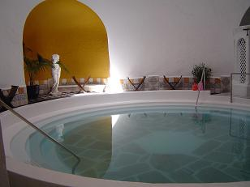
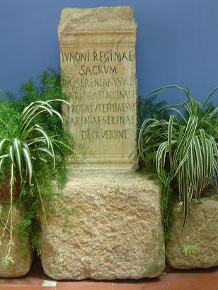

|
Las termas constituyen
el monumento más relevante y conocido de Alange. Los historiadores creen que
ya en la antigüedad el manantial de Alange era conocido y apreciado por sus
cualidades curativas.
Se conservan importantes restos de la primitiva estación termal romana e
inscripciones que atestiguan su relación con los habitantes de Emérita
Augusta. El trazado de las propias termas, sus desagües y restos
arqueológicos hallados, nos hablan del origen romano y de la explotación de
estas aguas. Sabemos que ya existían en la época de Trajano y Adriano. Eran
unas termas de tipo medicinal, aprovechando las propiedades curativas de las
aguas. Se encuentran ubicadas en el sector más bajo del pueblo, al pie del
Cerro de la Mesilla.
La construcción romana es un edificio rectangular en el que se alojan dos
cámaras idénticas circulares, a las que se accede por una inclinada escalera
de piedra.
|
En el centro de las cámaras están las
piscinas, también circulares. Dichas cámaras se cierran en el techo por dos
bóvedas semiesféricas con claraboyas en el centro. Incluso algunos arqueólogos creen que
probablemente seria una zona de recreo para los habitantes de Emérita
Augusta, localizada a 16 km. y estarían comunicadas por una vía trazada por la ribera de los ríos Matachel y Guadiana, y que une actualmente a estas
dos poblaciones.
A finales del siglo III aparecen llegados de la Capadocia la familia de los
Serénanos, y se instala en Emérita. Con ellos viajaba su hija que padece
algún tipo de enfermedad que las aguas del manantial hicieron desaparecer.
|
 |
|

|
Como
muestra de la sanación se encuentra en el patio del balneario un
ara de mármol blanco romana dedicada a la diosa Juno Regina por Licinius
Serenianus Clarissimus y su mujer en la que se le agradece la curación
de la hija Varinia Serenade. Esta ara es una muestra epigráfica de los
cualidades curativas de las aguas del Balneario y es también una
reseña histórica del uso medicinal de las aguas por los romanos. El
ara está datada en el siglo III.
En agradecimiento por
lo sucedido el cabeza de familia, Licinio Sereniano, construye un
edificio termal.
La decadencia y
posterior desaparición de Emérita como capital de la Lusitania romana
y la llegada de la cultura visigoda a estas tierras, traerán consigo
la decadencia de los baños termales. Estos baños fueron unos olvidados
por los godos y árabes durante la ocupación de la península.
Ver
Termas romanas
|
|